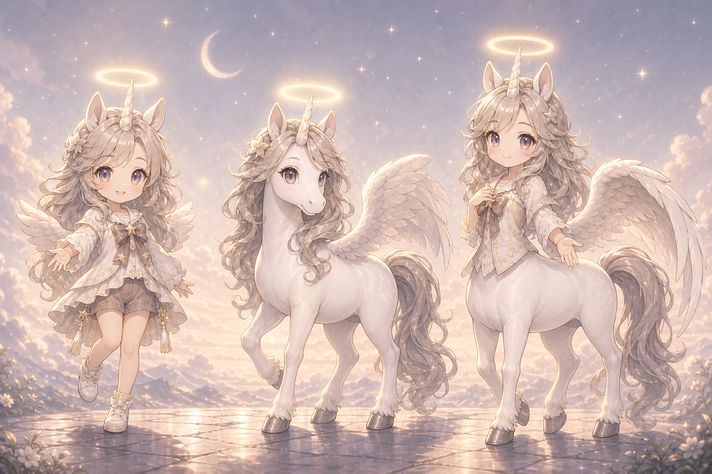
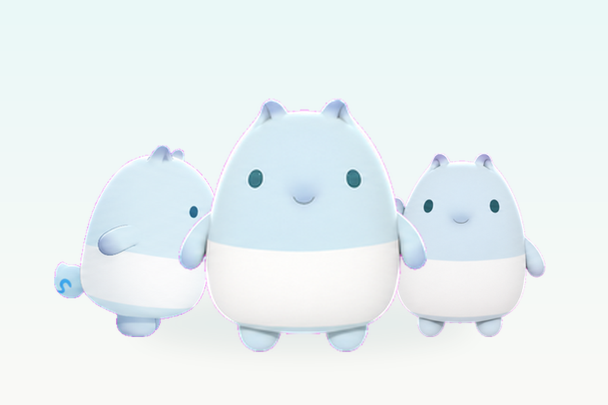
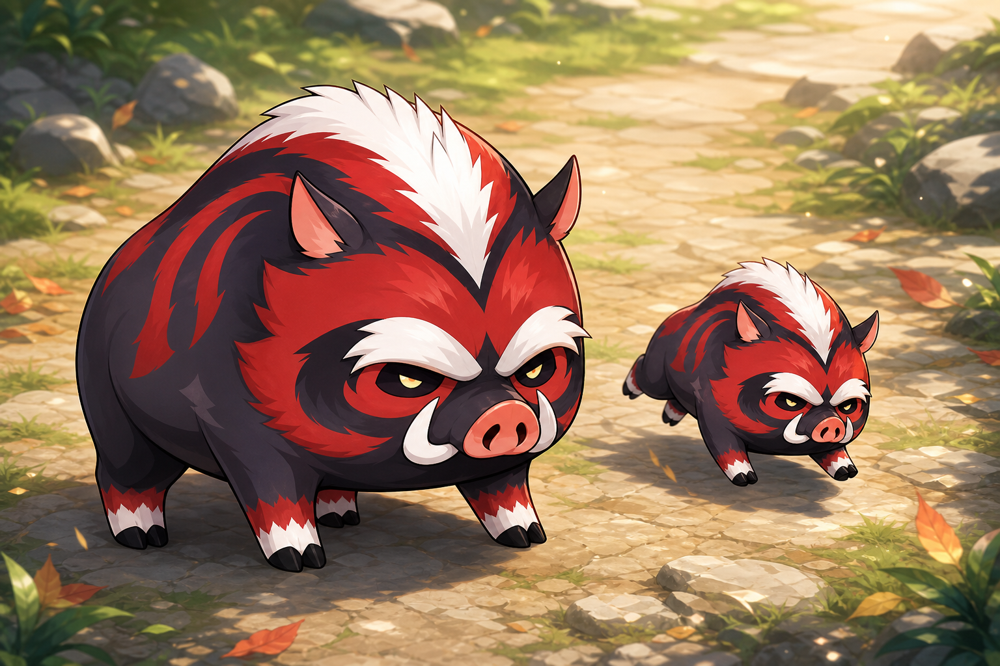

Curated Codex pets for inner companions
A careful gallery for companions, guardians, and soft little spirits.
Miantuan Pets collects remembered companions, dream friends, friendly guardians, and small spirits as installable Codex pets.



Remember
Start from a story, a memory, or a trusted reference.
Shape
Turn the companion into a clear, public pet package.
Share
Publish only the parts you are comfortable making public.
Gallery